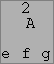
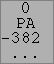

Mac 状態機械ダイアログ
 OpenType では文脈依存の参照を用いているのに対し、Mac では状態機械を用いています。右に示す例 は (それに付随する適切な置換と組み合わさって) 単語の先頭または中間にある短い s を (ルネッサンス調の印刷を行うために) 長い s に置換します。
OpenType では文脈依存の参照を用いているのに対し、Mac では状態機械を用いています。右に示す例 は (それに付随する適切な置換と組み合わさって) 単語の先頭または中間にある短い s を (ルネッサンス調の印刷を行うために) 長い s に置換します。
FontForge は現在 4 つのタイプの状態機械をサポートしています: 文脈依存のグリフ置換、インド系文字の再配置、文脈依存のグリフ挿入、そして文脈依存のカーニングです。右に示す例は文脈依存のグリフ置換です。
条件つき置換を行う状態機械の例がチュートリアルにあります。
Mac では 4 個の定義済みクラスが存在します。1 個は入力の終わりを意味するもので、1 個は他のどこでも指定しないグリフに対応し、1 個は特別な“deleted”グリフ (Apple 式では、削除を指示したばあい、常に即座に削除するのではなく、そのグリフを後で削除することを指定する特殊な印をグリフストリーム内に保持することがあります) に該当し、最後のクラスはテキスト行の末尾に対応するものです。これら 4 つに続く任意のクラスはユーザが定義したものです。
状態機械そのものは、各状態とクラスの対に対して 1 個の状態遷移が対応するような、状態遷移の 2 次元行列として表示されます。クラスは行列の上に表示され、状態は横に縦書きで表示されます。クラス 0 に含まれる入力が与えられた時の状態 0 からの遷移が左上にあり、他の要素も同様です。
状態機械の開始時には、最初の 2 個の状態のどちらかをとっています。入力の最初では状態 0 となり、新しい行が開始された時には状態1 となります。
状態遷移の表示は、状態機械のタイプによりわずかに違いがあります:
| インド系 | 文脈依存 | 挿入 | カーニング |
|---|---|---|---|
|
|
 |
 |
どの状態遷移でも、最初の行は次に移る状態を表します。次の行はフラグの集まりで、意味は以下の通りです:“M”⇒現在の文字に印づけがされる (この意味は後で説明します)、“A”⇒処理は次のグリフに進む。インド系のテーブルでは 3 番目のフラグがあります:“L”⇒現在のグリフはインド系文字の再配置の最後のグリフである。カーニングテーブルでは、現在のグリフをカーニングスタックに積むことを表す“P”フラグが存在します。
最後の 2 行は状態機械の種類によってさまざまに異なる意味をもちます。
- インド系の状態遷移では、この 2 行はインド系再配置動詞を得るために追加されます (上の例は“Ax ⇒ xA”という表示で、印づけされた最初のグリフが印づけされた最後のグリフの後に移動するという意味です)。
-
文脈依存の状態遷移ではこの 2 行は、入れ子になった置換の (4 文字のタグによる) 名前を指定します。最初の置換は印づけされた最後のグリフに適用され、2 番目は現在のグリフに適用されます (ある行が空である場合は、ここにあるグリフには置換は適用されません)
ある状態遷移が“印つき置換”と“現在のグリフに印をつける”フラグの両方をもっていた場合、現在のグリフではなく、前回印づけされたグリフに置換が適用されるのだと私は解釈しています。(Apple の文書にはこれに関する記述がありません)
警告: Apple の‘mort’フォーマットは、状態機械が何を行ったかをフォントエディタが表示できるように設計されていません。FontForge は多くの場合は現在のグリフにどの置換が適用されるかをうまく推測できますが、マークつきグリフに置換が適用される場合は余分なグリフ置換が含まれることがしばしばあります。これらは有害ではありません (それらが起動されることは決してありません) が、煩わしい余計物ではあります (‘morx’テーブルにはこのような問題は無いはずです)。 - 挿入タイプの状態遷移においては、各行は挿入されるグリフを指定します。最初の行はマークつきグリフに適用され、2 行目は現在のグリフに適用されます (挿入される文字をすべて表示する場所が無い場合は、表示は途中で切り詰められます)。場所の不足似より表示できない追加フラグもここには含まれています。それらは、状態遷移のマスをクリックすると表示されます。
-
カーニングの状態遷移においては、最初の行が最初の (2, 3 の) カーニング値を表し、2 行目は、表示しきれないカーニング値があることを示す“...”か、何も表示しないかのどちらかです。
注意: カーニング値の個数はカーニングスタックに置かれたグリフの個数と一致しなければなりません。さもないとアプリケーションがクラッシュします。
これらの状態機械が何を行うかに関するより完全な説明については、Apple の文書を読む必要があります。
- ‘morx’および‘mort’テーブルについて
- ‘kern’テーブル (フォーマット 1) について
- 状態遷移機械に関する一般論
- ‘feat’(機能) テーブル
- Apple のフォント機能登録簿
一般的な考えは、ワードプロセッサがテキストをグリフの列に変換し、それから状態機械がそのグリフ列に適用されるというものです。状態機械は状態 0 または 1 から始まり、最初のグリフがどのクラスに属するかを調べ、現在の状態に置けるそのクラスのインデックスを調べます。その位置における状態遷移は移動すべき新しい状態 (現在の物と同じ場合もあります) を明らかにし、通常は次のグリフに移行します (それにより、新しい状態では異なるグリフのインデックスづけが行われます) が、場合によっては新しい状態で引き続き現在のグリフの処理が行われることもあります。また、状態機械のタイプによって異なる一連の操作も同時に実行されます。
状態機械の多くは“印づけされた”グリフの概念をもっています。これは、与えられたグリフに対する望ましい変更が、その後ろに来るグリフによって異なる場合に重要な意味をもちます。そのような場合、興味深いグリフにたどり着いたときにそれに“印づけ”を行い、その後、2, 3 の追加のグリフを読んで、何を行うべきかが判明した後に、マークづけしたグリフに変換を適用します。
| インド系 | 文脈依存 | 挿入 | カーニング |
|---|---|---|---|
“印づけ”されたグリフの他に、インド系の変換においては“最後”のグリフという概念があります。“印づけ”されたグリフと“最後”のグリフの間に適用可能な変換が 16 種類あります。 |
この機能は現在のグリフへの置換と、印づけされたグリフに対する別の置換をを適用することができ、また、現在のグリフに印づけを行うことができます。置換は 4 文字のタグによって表され、エレメント(L)→グリフ情報(I)... ダイアログで作成することが可能な“入れ子の”置換でなければなりません。
| この機能は (31 個までののグリフからなる) 文字列を現在のグリフおよびマークづけされたグリフの前後に挿入することができます。 | カーニングでは 1 個の“印づけ”されたグリフは存在せず、その代わりにスタックに 8 個までのグリフを積んでおいて、それらのグリフに適用される一連のカーニング値を後で指定する個とができます (そのため、他の機能で印を表すフラグは“Mark”の頭文字“M”であるのに対し、この機能では“Push”の頭文字“P”となっています)。いちどすべてのグリフを積んだ後で、一連のカーニング値を適用することができます。スタックに積んだ各グリフごとに値 1 個が対応します。これは、いくつのグリフがカーニングを施されるかを示す数値です。
例えば、グリフストリームが F." であったとして、“.”を -300,“"”を 0 em ユニットだけカーニングしたい場合、カーニング値を -300 0 と指定することになります。 |
状態遷移の編集方法
状態遷移を編集するには、その上で単にクリックすると、その状態機械のタイプに合わせたダイアログが起動します。
| インド系 | 文脈依存 | 挿入 | カーニング |
|---|---|---|---|
|
|
|
|
各フィールドの意味の説明は、前述の記載を参照してください。
新しい状態を追加したい場合、次状態のフィールドに必要な状態番号を入力してください。FontForge は必要な状態欄を自動的に追加します。
クラス
 新しいクラスを追加したいときは、ダイアログの下の
新しいクラスを追加したいときは、ダイアログの下の [新規(N)] ボタンを押してください。クラスを編集したい場合は、そのクラスをダブルクリックしてください。ダイアログの表示が右に示したように変更されるはずです。テキストフィールドには、個のクラスに属するグリフ名のリストが含まれています。[セット] ボタンを押すとフォントビュー内で選択中のすべての文字からなるリストに変更されます。[選択] ボタンを押すとフォントビュー内の選択文字がテキストフィールド内のグリフと一致するように変更されます。